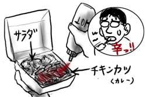
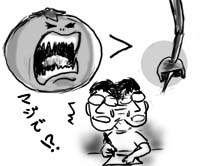

あまり時間がなかったので1Fの社員食堂(まずいから最終手段)で持ち帰り昼飯を取る事に。昼メニューはブリトーかチキンカツカレーなので当然カレーをチョイスします。日本料理であるカツカレーがこっちの食堂で普通に出て来るなんて結構珍しいんじゃないでしょうか。
厨房に「カレー」と注文すると「チキンカツ？」と聞き返されました。
プラスチックの持ち帰りパックに入ったカレーを手にレジへ。レジの人に中身は何かと聞かれたので「カレー」と言うとまた「チキンカツ？」と聞き返されました。こちらでは、チキンカツカレーでは「チキンカツ」パートの方が重要らしいです！
果たしてカレーソースの実態は、スパイスの「ス」の味もしない薄黄色のソースに、人参、たまねぎ、コーン、ズッキーニの入ったものでした。これは…カレー？
調味料コーナーでどばどばとホットソースをかけてしのぎました。辛いと何とかなるよね！

ちなみにチキンカツはカレーを覆い隠すように山盛り乗っかってましたよ！
今日は祝日(Labor Day)でした。のんびりと食糧の買い出しを済ませた後、ガソリンを入れているとおっさんが近寄って来ました。
「俺の車、壊れて置きっぱなしにしてるんだ。そこまで乗せて行ってくれないか」と言ってきます。連呼している場所までは、まぁ車なら5分くらいの距離なのですが、話しているうちになんだか微妙に位置が変わっていきます。というか、じゃぁそもそも何でこんな所にいるの！
「歩いてきたんだよ」…じゃぁ同じように歩いて帰ってください、と思っている間もおっさんの話は続きます。 「休日でさ、どこも開いてないし頼むよ」とかいいつつ、ここのガソリンスタンドのガレージは明らかに開いてるように見えます。 そもそもAAA(日本でいうところのJAF)や警察がいきなり全部サービス停止になっているなんておかしいですし、それ以前におじさんは赤ら顔で目も焦点が合ってないんですけどね！
「信じてくれよ、俺悪いやつじゃないよ。信じてないのか？」と言いつつ「じゃぁ運転免許証見せてよ」といっても見せる気配はないし、なんだか疲れて来たので「その場所知らない」と言い通していると、あきらめて次のターゲットへ行ってくれました。
休日は怖いなぁ！
同僚のTuan、Duyと昼ご飯を食べた後、Duyがちょっと車のパーツを買いたいというのでカー用品店に寄り道することになりました。
店の外でDuyをぼんやりと待っていた時、Tuanがおもむろに「Taku、なんでみんな結婚したいなんて思うのかなぁ…。デートで男がお金払ってさ、結婚したらしたで男がお金払ってさ。よく分かんないよ…」とつぶやきました。
Tuanに一体何があったのか。
9月になったので、夏休みだったESL(英語)教室も再開です。新しい生徒も多いので、映画のジャンルなどの無難な話題から始まります。
SF映画の例として先生が挙げたのは「スターシップ・トゥルーパーズ」。見たことある人は？と聞かれて手を挙げたのは僕一人でした。SF映画ならもっと他に一般的な例があるだろう！先生はそんな僕に「やっぱりシャワーシーンがよかったよね！」と答えにくいことを振ってきます。困ったもんだなぁ。まぁ僕は、基本的にこの映画から滲み出るバーホーベン監督の悪意がたまらなく好きですけどね！
そして先生が次にホラー映画の例として挙げたのが「アタック・オブ・ザ・キラートマト」。ふざけてるの！？しかし、驚いたことに今度はクラスのほとんど全員が手を挙げて笑っています。えーーー！クラスのほとんどは南米からの移民なのですが、南米ではこのボンクラ映画がそんなに人気なのか！

謎すぎます。